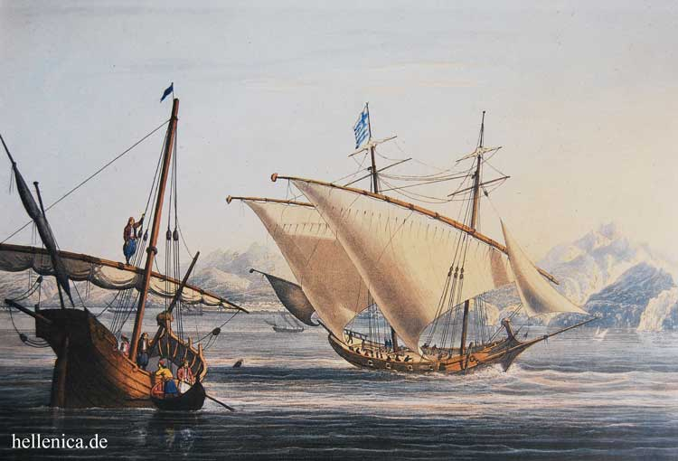
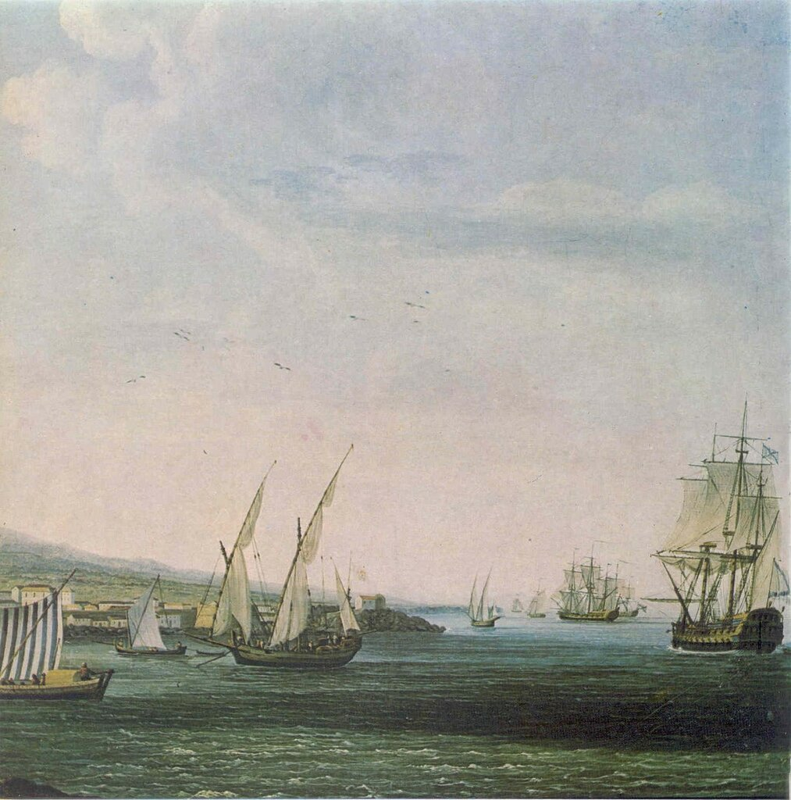
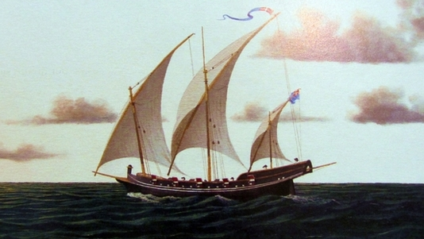

Разве трусам даны эти руки,
Этот острый, уверенный взгляд,
Что умеет на вражьи фелуки
Неожиданно бросить фрегат.
Н. С. Гумилев. «На полярных морях и на южных...»

Фелука , фелукъ или фелюка. Небольшое одномачтовое и легкое на ходу судно, въ коемъ можетъ помѣститься 10, а иногда и 13 человѣкъ, фелуки употребляются по большей части на Средиземномъ и Адріатическомъ моряхъ и не иначе, какъ у береговъ. Симъ именемъ такъ же называются и лодки о 6 и 8 веслахъ.
Felluca. (Felouque.) Фелюка, небольшое судно в Средиземном море.
Фелюга жен. фелюк муж., черномор. небольшое турецкое судно.
Филюга (Felouque. Felucca)— стар. двухмачтовое судно, отличалось от двухмачтовой галеры только темъ, что было меньше последней.
Получа такія извѣстія помянутый лейтенантъ Алексіано пошелъ того жъ дня съ одною фелукою прямо къ Даміатѣ, куда прибывъ 21 числа по утру нашелъ непріятеля въ такомъ точно состояніи, какъ объ немъ сказано было, но какъ скоро началъ онъ подходить ближе и поднялъ на фрегатѣ и фелукѣ россійскій флагъ, то непріятель, будучи симъ потревоженъ, произвелъ изъ судовъ и крѣпостныхъ стѣнъ пушечную пальбу, однако жъ тѣмъ не могъ защитить одного небольшаго своего судна, которымъ вооруженная фелука легко овладѣла, а лейтенантъ Алексіано пользуясь симъ смятеніемъ рѣшился атаковать непріятеля въ портѣ…
Материалы…, с.129

Въ 1791 году сработано коралловъ цѣною не болѣе какъ на 100,000 франковъ. Сіе произошло отъ того, что Корсиканцы со сто вооруженными фелуками упражнялись въ промыслѣ коралловъ, и отвозили добытый матеріалъ въ Геную, Ливорно и другія мѣста. Прежде сего занималась симъ промысломъ Африканская компанія, и заставляла всю добычу отвозить въ Марсель.
Магазинъ… (Часть первая. cъ Генваря до Іюня, 1795) Извѣстіе о кораллахъ и пріуготовленіи оныхъ…
Фелюга (итал. feluca, от араб. фулука – лодка), небольшое парусное судно прибрежного плавания; используется в Средиземном, Чёрном, Азовском, Каспийском и Аральском морях для перевозки грузов или рыбного промысла. Оснащена косым четырёхугольным парусом, а часто и двигателем.
ФЕЛЮ́ГА, -и, ж. Небольшое парусное беспалубное судно прибрежного плавания на Средиземном, Черном, Азовском, Аральском и Каспийском морях для рыбного промысла и перевозки мелких грузов. Двухмачтовая фелюга лениво покачивается с боку на бок. Куприн, Демир-Кая. Кочевники-туркмены начали замечать персидские фелюги, грузившие соль по ночам. Паустовский, Кара-Бугаз. [Итал. feluca]
ФЕЛУКА, ФЕЛЮКА
(Felucca) — род быстроходного парусного судна, встречающегося в Средиземном море. Имеет три мачты с латинским вооружением и большие весла для передвижения во время штилей. Рейки, к которым пришнуровываются паруса Ф., состоят иногда из двух, трех, четырех жердей бамбука или легкой сосны, сходящихся толстыми концами к середине и тонкими — к концам. Такие составные рейки весьма гибки и легко исправляются в случае повреждения.
ФЕЛЮГА (касп., черн.) — небольшое каботажное парусное судно.
Окружена высокими холмами,
Овечьим стадом ты с горы сбегаешь
И розовыми, белыми камнями
В сухом прозрачном воздухе сверкаешь.
Качаются разбойничьи фелюги,
Горят в порту турецких флагов маки,
Тростинки мачт, хрусталь волны упругий
И на канатах лодочки-гамаки.
О. Э. Мандельштам. Феодосия (1919-1920)
Перед домом стояла широкая турецкая фелюга: килем на чурбанах, кольями подперта.
Б. С. Житков. Элчан-Кайя (1926)
Плыли челны казачьи вниз по Дону-реке, Выплывали на Азов-море, Там сходились с фелюгами турецкими. Словно факелы, фелюги на воде горят. Турки криком кричат, в воду сыплются
Генрих Сапгир. Черновики Пушкина (1999)
Вскоре блокада была снята. В порт пришли из Херсона первые парусные дубки с абрикосами. Потом в одно безоблачное утро у Карантинного мола пришвартовались две пестрые, как писанки, турецкие фелюги из Скутари ― первые торговые суда в Одессе. На следующий день газеты с торжеством сообщили, что в порт прибыли из Турции на двух фелюгах кило камней для зажигалок, стеклянные бусы, позолоченные браслеты и бочонок маслин.
К. Г. Паустовский. Повесть о жизни. (1958)
Над низкой водою пустые пески,
Косматые скалы и тина,
Сюда контрабанду свозили дубки,
Фелюги и бригантины.
Э. Г. Багрицкий. Одесса (1924)

В Балаклаве ― и английский бот,
И фелука торгашеской Генуи,
И пещерного жителя плот
Облегли ее дно драгоценное…
М. А. Тарловский. Ираклийский треугольник
С африканского берега сотни пирог
Отплывают и жемчуга ищут вокруг,
И стараются их отогнать на восток
С аравийского берега сотни фелук.
Н. С. Гумилев. Красное море (1921)
Но так как Арамис и Портос спешили, то они прибыли первыми. Вслед за
ними появился Атос.
- Все идет превосходно, - заявил он, не дожидаясь вопроса товарищей.
- А вы что сделали? - спросил его Арамис.
- Я нанял маленькую фелуку, узкую, как индейская пирога, и легкую, как ласточка. Она будет дожидаться нас у Гринвича, против Собачьего острова. На ней хозяин и четыре матроса; за пятьдесят фунтов они согласились ждать нас три ночи подряд. Сев в нее вместе с королем, мы воспользуемся первым приливом, спустимся по Темзе и через два часа будем в открытом море. Затем, как настоящие пираты, мы поплывем вдоль берега, скрываясь за скалами, и если море окажется свободным, направимся прямо в Булонь. На тот случай, если меня убьют, запомните, что капитан зовется Роджерс, а фелука - "Молния". Зная это, вы без труда отыщете их. Носовой платок с четырьмя узлами на углах будет приметой, по которой вас узнают.
А.Дюма 20 лет спустя Пер. С. Шкунаев
Фелюга и, ж. (ит. feluca).
Небольшое промысловое судно на Черном море.
| По отношению к аналогичным судам на Средиземном море употребляются формы фелука, фелюка.
Толковый словарь иностранных слов Л. П. Крысина.- М: Русский язык, 1998